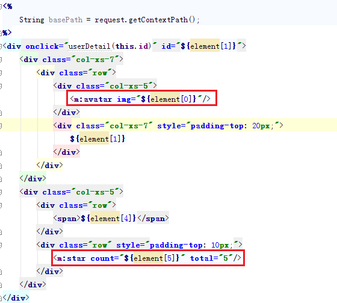

ILF Interactive Layout Framework
ILF 是将应用中的手机页面进行布局总结，通过向研发人员提供一整套布局以及布局下的可复用页面区块，来提高开发手机端页面的效率。同时，ILF通过在布局中内嵌成熟的交互模式，来提高框架的复用价值。
目录
如何使用ILF？
ILF的用户分为两类，一类是后端业务逻辑编写人员，一类是采用该框架进行页面开发的人员。
对于后端业务逻辑编写人员，框架提供了一个PageModel对象来承载业务数据，后端业务逻辑人员只要将业务数据添加到该对象中，并指定输出的页面标识即可。
pageModel采用List结构来装载后台数据。它有多个装载数据的结构，其中object为装载单条数据的容器；listData为装载列表数据的容器；groupListData和subListIndex为装载组列表数据的容器。
当后端业务逻辑编写人员在编写Controller的时候，将后台返回的数据添加到pageModel中，页面就会根据pageModel信息显示页面。
用户可以通过ArrayUtil.toArray将VO数据转化为pageModel要求的格式数据。
对于页面开发人员，首先需要根据自己要做的页面特征选择一个框架预置好的Layout，并通过Layout说明（tiles-core-templates.xml和tiles-ext-templates.xml）来编写页面中的自定义页面区域。
Layout分为两种类别，一种是Page级的Layout，即对应整个页面的Layout（以defpage结尾），一种是区域级的Layout（以defarea结尾），可以根据自己页面的特征选择合适的布局。
当填充内容时，需编写对应的JSP，并在布局声明文件中进行声明。
除了在布局声明文件中声明新的布局外，也可以通过通配符方案直接在代码中使用。
框架除了提供预置好的Layout以外，还提供了一定量的预置好的区域级复用块儿（title、tab），甚至是全页面的复用块儿（notice）
Notice Tiles:
对于页面的通用控件，框架提供了Taglib的方式进行了封装
页面飞出、飞入
图片加载
翻页
日期
提示框
自动登录
断网提醒
ILF中提供了分别加载表现和数据，并缓存表现的与服务器的交互模式：
在ILF中除了静态的布局外，还支持区块间和区块内基于发布订阅模式的事件模型，系统提供的可复用区块除了表现外还有对应的事件，用户可以在Controller中配置EventModel来将这些事件进行绑定。另外，用户也可以使用该机制定义自己的事件模型。
有时候触发事件的链条来自业务对象间的关系，系统设计了一个ObjectModel，通过向EventModel中设置ObjectModel信息，可以在事件触发的过程中获得业务对象的关联信息。

EventModel结构：
ObjectModel结构：
如何构建新的Layout？
Layout是针对一类相似页面总结出的通用布局（仅对应一个页面的Layout是不存在的，也不需要定义）。当识别多个页面的通用布局时，可以将个性化的区块看成黑盒，通过框架提供的机制未来在生成页面时插入。
以下是一个识别Layout的例子：
其中红颜色的为共性区块，蓝颜色的为个性区块。
另外也可以将整个中部区域视其为个性化区块：
当平台提供的Layout不够用时，用户可以根据自己的情况创建新的Layout。
一个Layout由多个子区域构成：
框架在layout/template下定义了大量的区块，用户可以通过使用这些区块构建新的Layout。用户也可以把自己新创建的区块添加到该目录下，以供他人使用或者其他项目复用。
另外，框架在content下为具有未来通用性的个性化区块保留了空间，用户也可以把自己新创建的具有通用性的个性化区块添加到该目录下，以供他人使用或者其他项目复用。
ILF 将随着使用的深入和广泛，生成跟多预置好的Layout、区域级复用块儿和全页面的复用块儿，将会大幅提高开发的效率！
Bootstrap3+JQuery1.11.3（布局、交互）
html5（飞出、飞入、保存用户名密码等）
iscroll（翻页）
Jquery.lazyload（图片加载）
notificationFx（提示框）
phoneGap2.9（Android交互）
Tiles3（布局）
Spring4（后端前端框架）
Jstl1.2（数据绑定）